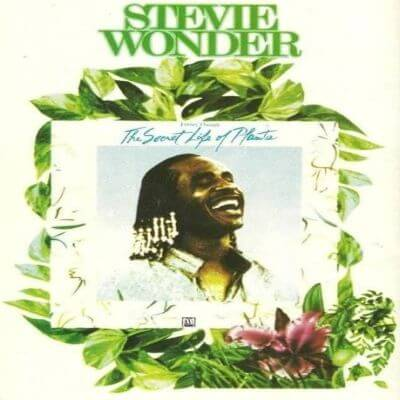

There are albums that are essentially pure in its simplicity; possess
the charm crystalline in the melodies, and overflow naturalness for his
instrumentation. Reflect the greatness of a man who is synonymous of magic. A magic that is seen with the intensity of lightning, paradoxically transporting you to the quiet life of your soul. This way it can design a conceptual work -in part instrumental- of Stevie Wonder in the '70's to nature.
Journey through the secret life of plants, was an explosion of creativity that sought to capture musically the love for life whatever is form and state, bringing light in the form of music to the documentary "The Secret Life of Plants". He is also
a rough diamond structured for melodies purity single, which over the years is keeping alive the essence.

A gift to the sensitivity unadorned melodies through flowing unchecked from the mind of a man with a talent unique. A delicate touch that permeates the senses ... it's simply the essence of a genius, Stevie Wonder in his natural state.
Black Orchid
A flake of snow within a storm
A new way waiting to be born
In a world with need of change
A touch of love in fear of hate
A rushing wind that's asked to wait
For the promises of rain
A pearl of wisdom entrapped by poverty
She gives love with purity
Filling minds with hopeful schemes
To build worlds enhanced by peace
Draped in sparkling morning dew
She expresses life anew
From the earth beneath her feet
She is a flower that grows
In love ability
She's femininity
Black Orchid, Black Orchid
Why did they make you begin
When they know in time you'll find your truth
before your cycle ends
Black Orchid, Black Orchid
Why are you crying their fears
When the true reflection of you that they see
Is love besieged by years
She has touched the farthest star
Her beauty speaks of what we are
And her freedom makes us free
Her now is in eternity
Infinite to all that see
And her dreams have been achieved
Now there is a sound of laughter
Nature signs out her name
For the world to know her fame
Black Orchid, Black Orchid
Why did they criticize
When they knew your love could cast its spell and
consecrate their eyes
Black Orchid, Black Orchid
Why do you linger in space
When you know in every heart that beats
You hold a special place
When you know in every heart that beats
You hold a special place

Power Flower
Pan is my name
I live outside the door
I have to keep the score of things around you
Fire and air,
Earth, water I prepare
I am the piper at the gates of dawning
It's not magic it's not madness
Just the elements I style
And I guarantee faithfully I will never go
Until all is said and done
In a twinkling I'll be gone
Well excuse me I have so much more to do
Fancy I feel,
A childlike tap I'll steal
Look twice my friend it's not the wind at all
You'll never see,
What you refuse to be
The power in the seeing is believing.
It's not magic it's not madness
Just the elements I style
And I guarantee faithfully I will never go
Until all is said and done
In a twinkling I'll be gone
Well excuse me I have so much more to do
It's not magic it's not madness
Just the elements I style
And I guarantee faithfully I will never go
Until all is said and done
In a twinkling I'll be gone
Well excuse me I have so much more to do
(Background)
Flower Power, Power Flower, Flower Power, Power of Love
Power Flower, Flower Power, Power Flower, Flower of Love
(repeat)
He's a power flower yeah, oh
Protecting all the flowers, yeah, oh
He's a flower's power, yeah
Through earth, wind, fire, showers, yeah, oh, oh, oh, oh
oh, oh, oh, oh
He's a power flower yeah, oh
Protecting all the flowers, yeah, oh.